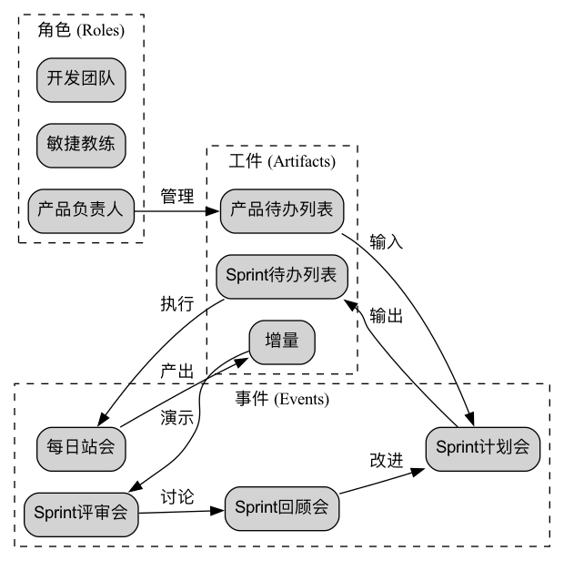

Scrum¶
在敏捷开发（Agile）的广阔世界里，如果说敏捷是一套指导我们拥抱变化的“价值观”，那么Scrum就是一套将这些价值观付诸实践的、最受欢迎、应用最广泛的轻量级框架。Scrum并非一套详尽的流程或方法，而是一个旨在帮助团队在开发复杂产品时，能够高效协作、持续交付价值的“游戏规则”手册。它通过定义一系列清晰的角色、事件和工件，为团队提供了一个简单、明确但又极具力量的迭代式工作节奏。
Scrum的名字源于英式橄榄球中的“争球”动作，强调的是整个团队像一个紧密协作的整体，共同向着一个目标推进。它承认，在面对复杂问题时，我们不可能在一开始就掌握所有答案。因此，Scrum的核心在于通过一系列短周期的、时间固定的迭代（即“冲刺”，Sprint），来将一个大的、不确定的问题，分解为一系列小的、可控的实验。在每个冲刺结束时，团队都会交付一个可用的产品增量，并进行反思和调整，从而在经验中学习，在变化中前进。
Scrum框架的三大支柱¶
Scrum的整个框架，建立在三大经验主义的支柱之上：
- 透明（Transparency）：所有影响结果的重要方面，都必须对所有负责该结果的人（包括客户）保持可见。这意味着工作进展、障碍、待办事项等都必须是公开、透明的。
- 检视（Inspection）：必须频繁地、定期地检视Scrum的工件和目标的进展情况，以便及时发现不必要的差异或问题。
- 适应（Adaptation）：当检视发现当前的工作已经偏离了可接受的范围，并且最终产品将是不可接受的时，必须尽快地对过程或产出进行调整。
Scrum的3-5-3结构¶
Scrum的“游戏规则”可以被简洁地概括为“3-5-3”结构：3个角色，5个事件，3个工件。

<!--

3个角色¶
- 产品负责人（Product Owner）：他是产品“价值”的唯一负责人。其主要工作是管理和优化产品待办列表（Product Backlog），确保开发团队始终在为客户和业务创造最高的价值。他决定“做什么”。
- Scrum Master：他是Scrum框架的“仆人式领导”和“教练”。他并不管理团队，而是服务于团队，负责移除障碍、引导事件、并确保Scrum的规则和价值观被团队正确地理解和执行。
- 开发团队（Developers）：一个跨职能的、自组织的专业团队，他们共同负责在每个冲刺中，将待办列表中的任务，转化为一个高质量的、可交付的产品增量。他们决定“如何做”。
5个事件¶
- 冲刺（Sprint）：是Scrum的核心，一个长度固定（通常为1-4周）的时间盒。在一个冲刺中，团队聚焦于完成一个有价值的“冲刺目标”。
- 冲刺计划会（Sprint Planning）：在每个冲刺开始时举行。产品负责人向开发团队阐述待办列表中优先级最高的任务，团队共同选择并承诺在本个冲刺中能够完成的工作，并制定出初步的执行计划，形成冲刺待办列表（Sprint Backlog）。
- 每日站会（Daily Scrum）：一个不超过15分钟的每日同步会议。开发团队的每个成员轮流回答三个问题：“我昨天做了什么？”“我今天打算做什么？”“我遇到了什么障碍？”其目的是为了快速同步进展，识别障碍，而非向管理者汇报。
- 冲刺评审会（Sprint Review）：在冲刺结束时举行。开发团队向产品负责人、客户等所有利益相关者，演示本次冲刺完成的、可工作的产品增量，并收集反馈。这是一个非正式的、关于“产品”的会议。
- 冲刺回顾会（Sprint Retrospective）：在冲刺评审会之后、下一个冲刺开始之前举行。Scrum团队（PO, SM, Devs）共同反思刚刚结束的这个冲刺在人、关系、流程和工具等方面，有哪些做得好的，以及有哪些可以改进的地方，并形成一个具体的改进计划，用于下一个冲刺。
3个工件¶
- 产品待办列表（Product Backlog）：一个动态的、按优先级排序的、包含所有已知的产品需求、功能、修复和改进的总清单。它由产品负责人全权负责。
- 冲刺待办列表（Sprint Backlog）：开发团队在本个冲刺中，承诺要完成的任务清单，以及达成“冲刺目标”的计划。它由开发团队全权拥有和管理。
- 产品增量（Increment）：每个冲刺结束时，所有完成的待办列表项的总和，它必须是可用的、符合“完成定义（Definition of Done）”的。它是团队工作成果的直接体现。
应用案例¶
案例一：开发一个在线订餐App
- 产品待办列表：包含了“用户注册”、“浏览菜单”、“在线支付”、“订单跟踪”等上百个用户故事。
- 冲刺1 (2周)：
- 冲刺目标：“用户能够成功注册并登录。”
- 冲刺待办列表：团队选择了与注册登录相关的5个用户故事。
- 每日站会：团队每天同步进度，发现“短信验证码接口不稳定”是一个障碍，Scrum Master立即去协调解决。
- 冲刺评审：团队演示了一个可以跑通的、完整的注册登录流程。
- 冲刺回顾：团队反思认为，他们对任务的估算过于乐观，决定在下个冲刺中，采用更保守的估算方法。
案例二：一个市场营销团队策划一场产品发布会
- Scrum不仅适用于软件开发。
- 产品负责人：市场总监。
- 产品待办列表：包含了“确定发布会主题”、“设计主视觉”、“邀请媒体和KOL”、“撰写新闻稿”、“场地预定”等所有工作事项。
- 冲刺1 (1周)：
- 冲刺目标：“敲定发布会的核心主题和主视觉设计初稿。”
- 团队通过为期一周的冲刺，快速地产出了成果，并在评审会上向公司高层进行了演示，及时地获得了反馈，避免了在错误的方向上投入过多设计资源。
案例三：一个学生小组完成一个学期大作业
- 产品负责人：由一名同学担任，负责与教授沟通，明确作业要求。
- 产品待办列表：将整个大作业分解为“文献综述”、“数据收集”、“数据分析”、“报告撰写”、“PPT制作”等多个部分。
- 冲刺：他们将学期剩余的8周，划分为4个为期2周的冲刺。每个冲刺都有一个明确的目标，例如，第一个冲刺的目标是“完成文献综述和研究设计”。这种方式，有效地避免了在学期末最后一周才“挑灯夜战”的拖延情况。
Scrum的优势与挑战¶
核心优势
- 提升生产力与速度：通过短周期的迭代和聚焦，团队能够更快地交付价值。
- 增强灵活性与适应性：能够从容地应对需求变化，并根据反馈及时调整方向。
- 提高透明度与沟通：清晰的角色、事件和工件，极大地促进了团队内外的沟通和信息同步。
- 赋能团队，提升士气：自组织的开发团队，拥有更高的自主性和主人翁意识。
潜在挑战
- “易于理解，难于精通”：Scrum的规则很简单，但要真正地理解其背后的敏捷精神，并将其在特定组织文化中成功地实践，非常困难。
- 对产品负责人的要求极高：产品负责人需要同时深刻理解业务、市场和客户，并具备出色的沟通和决策能力。
- 可能导致“范围蔓延”：如果产品负责人不能很好地管理待办列表和利益相关者的期望，可能会导致冲刺目标频繁变动。
- 需要团队的成熟度：自组织的团队，要求成员具备高度的责任心、协作精神和跨职能的技能。
延伸与关联¶
- 敏捷开发（Agile）：Scrum是实现敏捷价值观和原则的一个具体的、最主流的框架。
- 看板（Kanban）：是另一种流行的敏捷方法。与Scrum基于“时间盒（冲刺）”的节奏不同，看板更侧重于“连续流”。在实践中，很多团队会将两者结合，例如，在一个Scrum冲刺的内部，使用看板来可视化和管理任务的流动，这被称为“Scrumban”。
- 极限编程（XP）：Scrum提供的是“管理框架”，而XP提供的是一系列卓越的“工程实践”。将XP的实践（如测试驱动开发、结对编程）融入到Scrum的框架中，能够极大地提升产品增量的技术质量。
来源参考：Scrum框架最早由杰夫·萨瑟兰（Jeff Sutherland）和肯·施瓦伯（Ken Schwaber）在20世纪90年代初共同提出。他们两人合作撰写的《Scrum指南》（The Scrum Guide）是Scrum框架的唯一官方定义，它会定期更新，以反映实践的演进。